# load required packages
library(tidyverse)
library(tidymodels)
library(mcmodel)
library(cowplot)
# default theme
theme_set(theme_bw() +
theme(legend.key.size = unit(0.4,'cm'),
legend.key.height = unit(.4, 'cm')))
# global setting
strain_label = c("label_E", "label_P")
strain_name = c("EC","PP")
strain_color = c("red3", "purple3")
# well position
ec_single_well = paste0(rep(LETTERS[1:16], times = 3), rep(1:3, each = 16))
pp_single_well = paste0(rep(LETTERS[1:16], times = 3), rep(4:6, each = 16))
gradient_matrix_well = paste0(rep(LETTERS[1:16],times = 16), rep(7:22,each = 16))
strain_single_well = list(EC = ec_single_well, PP = pp_single_well)
# set seed
set.seed(0)1 Single Species Modeling
Investigation of the amplification, melting curve and Ct standard curve of single species PCRs using Linear modeling.
1.1 Global setting
Here we load packages and define several frequently used variables.
1.2 Data process
We use one experiment to start the story.
The experiment of melting curve analysis (and RT-PCR) was performed with a QuantStudio Software supported machine. Therefore, the results file used here is the plain text output of full results of the QuantStudio software (V1.5). In mcmodel package, it has the read_quantstudio() function to read in the data and transform the full record to a QuantStudioRaw class object.
# read qPCR run results
raw_file = xfun::magic_path("cycle30-experiment1.txt")
quantstudio_raw = read_quantstudio(raw_file)
quantstudio_rawAn object of class 'QuantStudioRaw':
Slots: [Sample Setup], [Raw Data], [Amplification Data],
[Multicomponent Data], [Results], [Reagent Information], [Melt
Curve Raw Data], Meta;The plate setting used in melting curve analysis is provided in a csv file. Original value for each column is the times of two-fold dilution, and we transform them into DNA quantity as related to the original concentration (assumed to be 1). Note: a label value of 16 means not contain this species.
# read plate setting
plate_file = xfun::magic_path("modeling-plate-labels.csv")
plate = read.csv(plate_file)
plate2 = plate |>
drop_na() |>
mutate(label_E = ifelse(label_E == 0, 1, ifelse(label_E == 16, 0, 1/2^label_E)),
label_P = ifelse(label_P == 0, 1, ifelse(label_P == 16, 0, 1/2^label_P)))1.3 Well concentration
A 384-well PCR plate was divided into two parts. 1) the dilution of single species DNA template of E. coli (Figure 1.1a) and P. putida (Figure 1.1b), 2) the gradient matrix of two-species DNA mixtures (Figure 1.1c).
p_concentration = lapply(seq_along(strain_label), function(i){
plate2 |>
dplyr::filter(well_position %in% strain_single_well[[i]]) |>
plot_384_single_concentration(strain_label[[i]], well_size = 1.5) +
scale_color_gradient(high = strain_color[[i]],
low = "white",
trans = "log2",
na.value = "grey90") +
coord_equal() +
theme(legend.position = 'none')
})
plate3 = plate2 |>
dplyr::filter(well_position %in% gradient_matrix_well)
p_matrix = plot_384_community_structure(plate3) +
scale_fill_manual(values = c("red3","purple3")) +
coord_equal() +
theme(legend.position = 'none')
plot_grid(p_concentration[[1]], p_concentration[[2]], p_matrix,
ncol = 2, labels = 'auto')
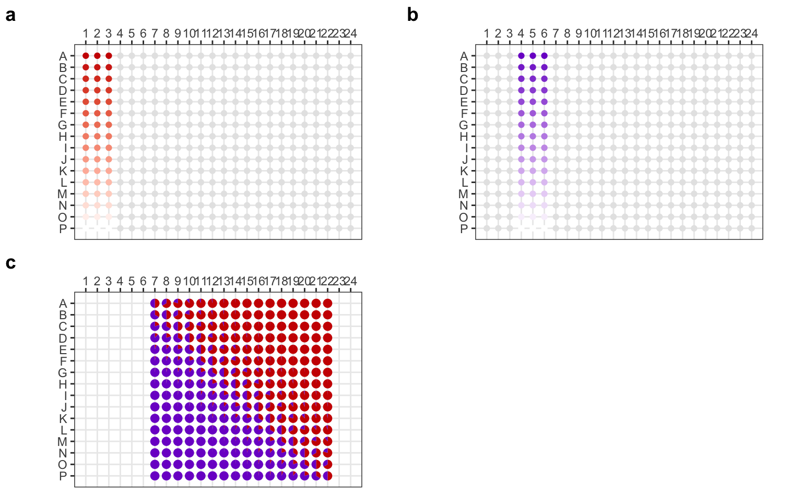
1.4 Amplification plot
# plot amplification curve
qs_amplification = get_quantstudio_amplication(quantstudio_raw)p_amp = lapply(seq_along(strain_label), function(i){
df = qs_amplification |>
dplyr::filter(well_position %in% strain_single_well[[i]]) |>
left_join(plate2)
ggplot(df, aes(cycle, delta_rn, group = well_position)) +
geom_line(aes(color = .data[[strain_label[[i]]]])) +
geom_hline(yintercept = 0.124, linetype = 'dashed', color = 'grey') +
geom_text(x = -Inf, y = 0.124, label = 'Ct threshold',
hjust = -.25, vjust = -0.5, color = 'grey') +
scale_color_gradient(
high = strain_color[[i]], low = "white", trans = 'log2',
labels = trans_format("log2", label_number_auto()),
breaks = 2^c(0, -5, -10, -15)
) +
labs(color = expression(log[2]*Q), y = 'fluorescence') +
theme(legend.position = "inside",
legend.position.inside = c(0.38,0.62))
})Joining with `by = join_by(well_position)`
Joining with `by = join_by(well_position)`plot_grid(plotlist = p_amp, labels = "auto")
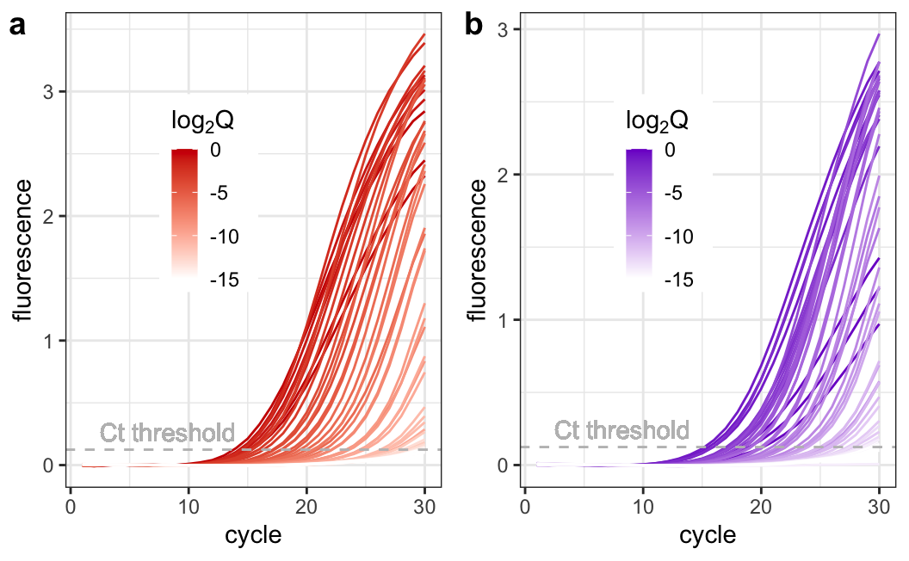
1.5 Ct model of single species
# check ct calling results
qs_results = get_quantstudio_result(quantstudio_raw) |>
dplyr::select(well_position, ct) |>
dplyr::mutate(ct = as.numeric(ct)) |>
left_join(plate2) |>
pivot_longer(cols = starts_with("label_"),
names_to = "strain",
values_to = "quantity") |>
dplyr::filter(quantity != 0, !is.na(ct))Warning: There was 1 warning in `dplyr::mutate()`.
ℹ In argument: `ct = as.numeric(ct)`.
Caused by warning:
! NAs introduced by coercionJoining with `by = join_by(well_position)`mono_ct = qs_results |>
dplyr::filter(well_position %in% unlist(strain_single_well))
mono_ct# A tibble: 90 × 4
well_position ct strain quantity
<chr> <dbl> <chr> <dbl>
1 A1 15.4 label_E 1
2 A2 13.9 label_E 1
3 A3 15.2 label_E 1
4 A4 18.3 label_P 1
5 A5 20.1 label_P 1
6 A6 19.0 label_P 1
7 B1 14.5 label_E 0.5
8 B2 14.3 label_E 0.5
9 B3 14.8 label_E 0.5
10 B4 15.2 label_P 0.5
# ℹ 80 more rowsp_ct = lapply(seq_along(strain_label), function(i){
qs_results |>
dplyr::filter(well_position %in% strain_single_well[[i]]) |>
ggplot(aes(ct, log2(quantity))) +
geom_smooth(method = 'lm', color = strain_color[[i]]) +
geom_point(shape = 21, color = strain_color[[i]]) +
labs(y = expression(log[2]*Q), x = 'Ct')
})
plot_grid(plotlist = p_ct, labels = "auto")`geom_smooth()` using formula = 'y ~ x'
`geom_smooth()` using formula = 'y ~ x'
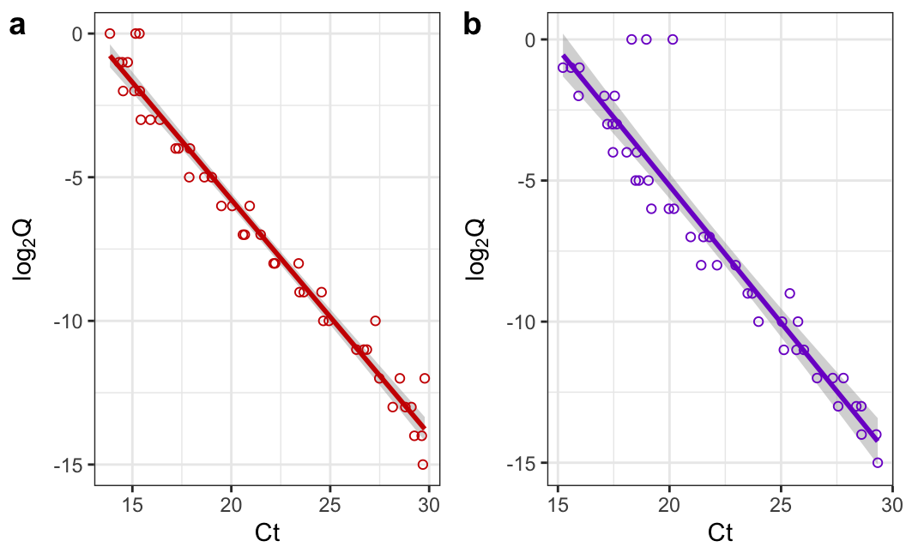
1.6 Melting curve gradient
mc = quantstudio2mc(quantstudio_raw, plate = plate2, primer = "V4")
mc = filterData(mc, from = 80, to = 90) |>
transformData(step = 0.1)plot_mc_single = function(mc, label_color, vline_color){
# get tm value (median)
tm = mc_get_tm(mc, npeaks = 1) |> pull(peak_position) |> median()
df = mc2tbl(mc) |>
select(-date, -primer) |>
summarize(derivative = median(derivative),
.by = all_of(c("temperature", label_color)))
# plot mc
ggplot(df,
aes(temperature, derivative,
color = .data[[label_color]],
group = .data[[label_color]])) +
geom_line() +
geom_vline(aes(xintercept = I(tm)),
linetype = 'dashed',
color = vline_color) +
geom_text(x = tm, y = Inf, hjust = -0.1, vjust = 2,
label = paste0("Tm = ", tm, "°C"),
color = vline_color) +
scale_x_continuous(breaks = c(80, 85, 90)) +
labs(x = "temperature (°C)",
y = "fluorescence",
color = expression(log[2]*Q)) +
theme(legend.position = "inside",
legend.position.inside = c(0.75,0.5))
}
p_mc = lapply(seq_along(strain_label), function(i){
filterData(mc, well_position = strain_single_well[[i]]) |>
plot_mc_single(strain_label[[i]], strain_color[[i]]) +
scale_color_gradient(
high = strain_color[[i]],
low = "white",
trans = 'log2',
labels = trans_format("log2", label_number_auto()),
breaks = 2^c(0, -5, -10, -15)
)
})
plot_grid(plotlist = p_mc, ncol = 2, labels = "auto")
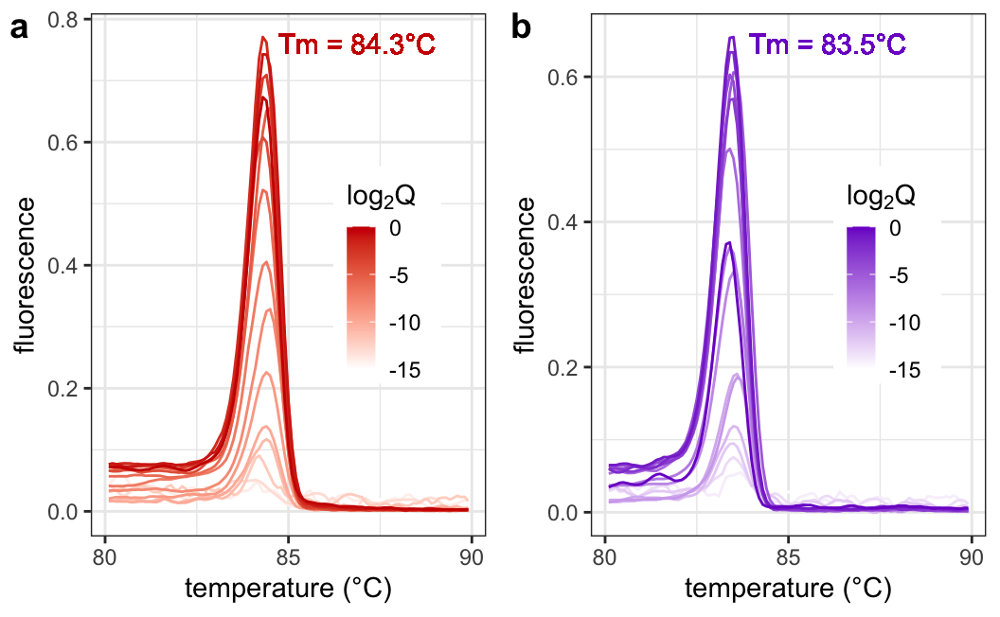
1.7 Peak calling
Detect peak and get peak features.
mono_mc = lapply(seq_along(strain_label), function(i){
x = filterData(mc, well_position = strain_single_well[[i]]) |>
transformData(step = 0.1)
df = mc2tbl(x) |>
select(-date, -primer) |>
nest(data = c(temperature, derivative)) |>
pivot_longer(cols = starts_with("label_"),
names_to = "strain",
values_to = "quantity")
peaks = lapply(df$data,
mcmodel:::detect_tm,
zero = "+",
npeaks = 1,
sortstr = TRUE,
threshold = 0) |>
bind_rows()
bind_cols(df, peaks)
}) |>
bind_rows() |>
dplyr::filter(quantity != 0)
mono_mc$peak_area = sapply(1:nrow(mono_mc), function(i){
d = mono_mc$data[[i]] |>
filter(temperature >= mono_mc$peak_start[[i]],
temperature <= mono_mc$peak_end[[i]])
pracma::trapz(d$temperature, d$derivative)
})
peak_cols = paste('peak',
c('height','area','start','position','end'),
sep = "_")
mono_mc = mono_mc |>
dplyr::select(well_position, strain, quantity, matches(peak_cols))
mono_mc# A tibble: 96 × 8
well_position strain quantity peak_height peak_area peak_start peak_position
<chr> <chr> <dbl> <dbl> <dbl> <dbl> <dbl>
1 A1 label_E 1 0.644 0.740 82.1 84.3
2 A2 label_E 1 0.801 0.938 82.3 84.3
3 A3 label_E 1 0.673 0.791 82.2 84.3
4 B1 label_E 0.5 0.761 0.898 82.4 84.4
5 B2 label_E 0.5 0.882 1.06 83 84.8
6 B3 label_E 0.5 0.751 0.905 82.1 84.3
7 C1 label_E 0.25 0.771 0.946 82 84.3
8 C2 label_E 0.25 0.844 1.06 82.1 84.4
9 C3 label_E 0.25 0.737 0.871 82.4 84.3
10 D1 label_E 0.125 0.691 0.838 82.2 84.3
# ℹ 86 more rows
# ℹ 1 more variable: peak_end <dbl>Correlations of DNA quantity to peak features.
plots = lapply(peak_cols, function(x){
ggplot(mono_mc, aes(log2(quantity), .data[[x]], color = .data$strain)) +
geom_point(size = 0.2) +
geom_smooth(method = MASS::rlm) +
labs(x = expression(log[2]*Q),
y = sub(pattern = "_", replacement = " ", x)) +
scale_color_manual(values = strain_color) +
theme(legend.position = "none")
})
plot_grid(plotlist = plots, align = 'hv', ncol = 3, labels = "auto")`geom_smooth()` using formula = 'y ~ x'
`geom_smooth()` using formula = 'y ~ x'
`geom_smooth()` using formula = 'y ~ x'
`geom_smooth()` using formula = 'y ~ x'
`geom_smooth()` using formula = 'y ~ x'
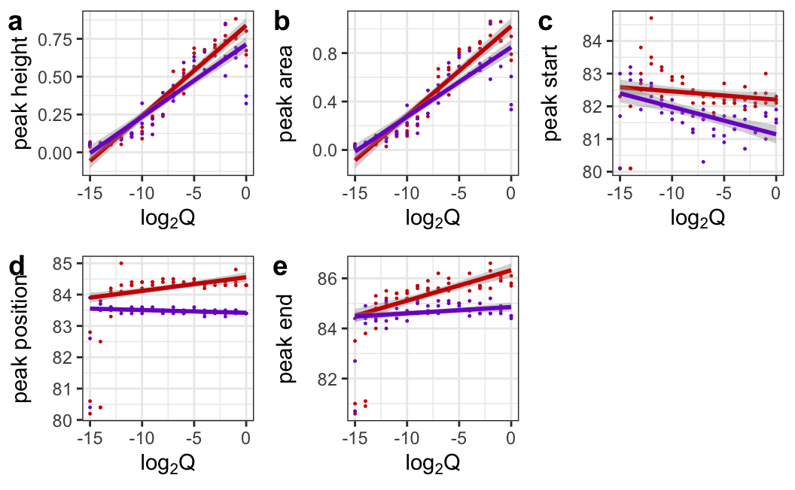
library(corrplot)corrplot 0.92 loadedmono_mc_vars = mono_mc |>
dplyr::mutate(log2Q = log2(quantity)) |>
dplyr::select(well_position, log2Q, matches(peak_cols)) |>
dplyr::rename(`$log[2]*Q` = log2Q) |>
dplyr::rename_with(.fn = function(x) sub("_", " ", x),
.cols = matches(peak_cols))
cols = c('Reds','Purples')
p_mc_corrplot = lapply(seq_along(strain_label), function(i){
vars = mono_mc_vars |>
dplyr::filter(well_position %in% strain_single_well[[i]]) |>
dplyr::select(-well_position)
M = cor(vars)
T = cor.mtest(vars, conf.level = 0.95)
corrplot::corrplot(M,
diag = FALSE, addCoef.col = 'grey80',
col = COL1(cols[[i]]),
tl.srt = 30,
tl.col = strain_color[[i]],
p.mat = T$p)
})
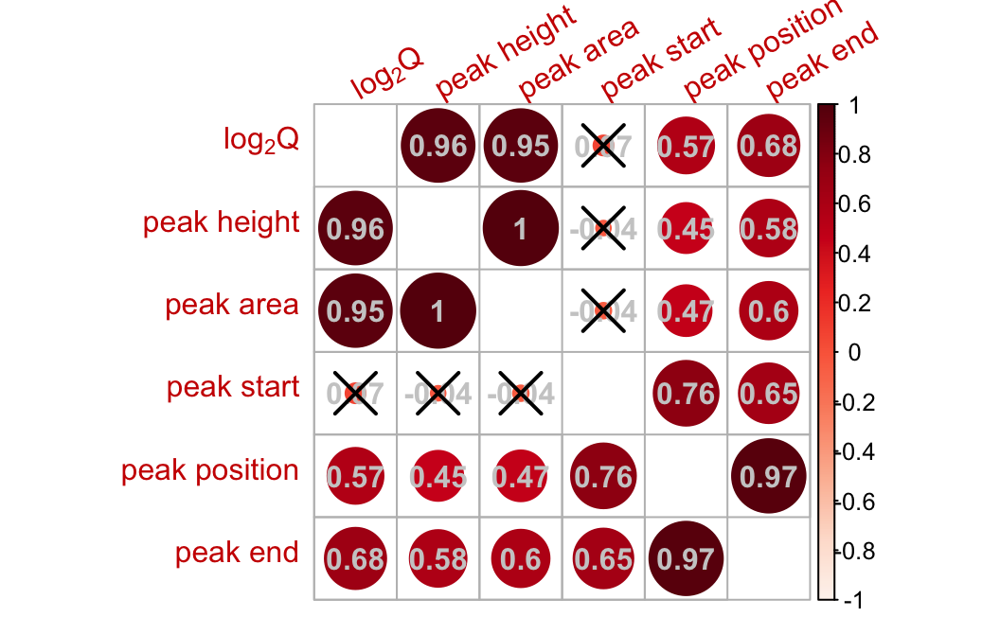
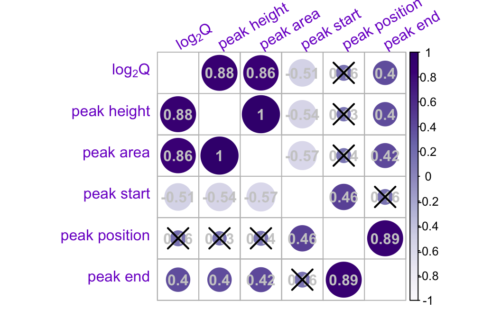
p_peak_height = lapply(seq_along(strain_label), function(i){
mono_mc |>
dplyr::filter(well_position %in% strain_single_well[[i]]) |>
ggplot(aes(peak_height, log2(quantity))) +
geom_smooth(method = 'lm', color = strain_color[[i]]) +
geom_point(shape = 21, color = strain_color[[i]]) +
labs(x = 'peak height',
y = expression(log[2]*Q))
})
plot_grid(plotlist = p_peak_height, ncol = 2, labels = "auto")`geom_smooth()` using formula = 'y ~ x'
`geom_smooth()` using formula = 'y ~ x'
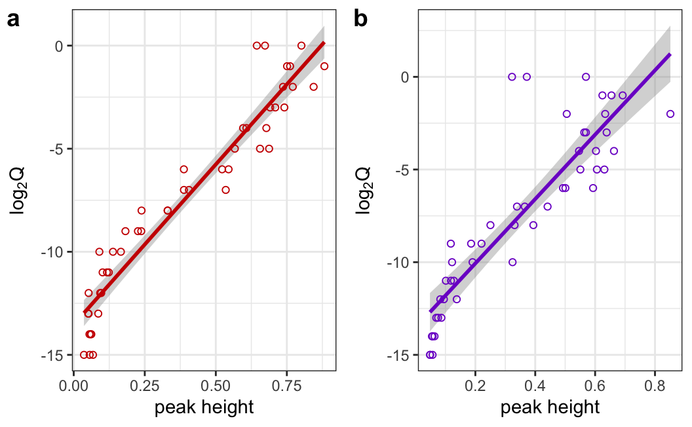
p_peak_area = lapply(seq_along(strain_label), function(i){
mono_mc |>
dplyr::filter(well_position %in% strain_single_well[[i]]) |>
ggplot(aes(peak_area, log2(quantity))) +
geom_smooth(method = 'lm', color = strain_color[[i]]) +
geom_point(shape = 21, color = strain_color[[i]]) +
labs(x = 'peak area', y = expression(log[2]*Q))
})
plot_grid(plotlist = p_peak_area, ncol = 2, labels = "auto")`geom_smooth()` using formula = 'y ~ x'
`geom_smooth()` using formula = 'y ~ x'
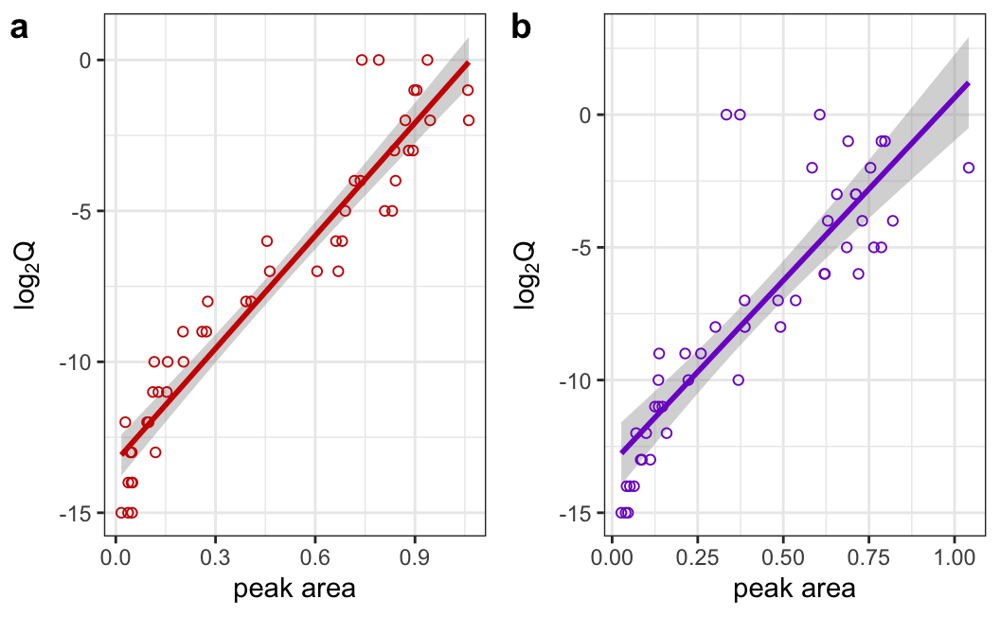
1.8 Comparision of Ct and MC modelling
qs_single_results = qs_results |>
dplyr::filter(well_position %in% unlist(strain_single_well))
qs_single_results# A tibble: 90 × 4
well_position ct strain quantity
<chr> <dbl> <chr> <dbl>
1 A1 15.4 label_E 1
2 A2 13.9 label_E 1
3 A3 15.2 label_E 1
4 A4 18.3 label_P 1
5 A5 20.1 label_P 1
6 A6 19.0 label_P 1
7 B1 14.5 label_E 0.5
8 B2 14.3 label_E 0.5
9 B3 14.8 label_E 0.5
10 B4 15.2 label_P 0.5
# ℹ 80 more rowsmodel_metric = function(formula, data, ...){
model = lm(formula, data)
summary = summary(model)
quosures = enquos(...)
tibble(data = deparse(substitute(data)),
formula = paste(as.character(formula), collapse = " "),
metric = c("r_squared", "adj_r_squared"),
value = c(summary$r.squared, summary$adj.r.squared)) |>
dplyr::mutate(!!!quosures, .before = 1)
}plot_model_metric = function(model, test_data, color){
predictions = augment(model, newdata = test_data)
metrics = metric_set(rmse, rsq, mae)
model_metrics = metrics(predictions,
truth = 'log2quantity',
estimate = .fitted)
annotation = paste(model_metrics[['.metric']],
round(model_metrics[['.estimate']], digits = 2),
sep = ": ",
collapse = "\n")
ggplot(predictions, aes(`log2quantity`, `.fitted`, color = I(color))) +
geom_point(shape = 21) +
geom_abline(slope = 1, linetype = 'dashed', color = color) +
annotate("text", x = -Inf, y = Inf, label = annotation,
color = I(color),
hjust = -0.1, vjust = 1.1) +
coord_equal() +
xlim(c(-16,0)) + ylim(c(-16, 0)) +
labs(x = expression(log[2]*Q[true]), y = expression(log[2]*Q[pred]))
}
p_model_ct = lapply(seq_along(strain_label), function(i){
data = mono_ct |>
dplyr::filter(well_position %in% strain_single_well[[i]]) |>
mutate(log2quantity = log2(quantity))
data_split_single = initial_split(data)
data_train_single = training(data_split_single)
data_test_single = testing(data_split_single)
model = lm(log2quantity ~ ct, data_train_single)
p = plot_model_metric(model, data_test_single,
strain_color[[i]]) + labs(subtitle = 'Ct model')
return(p)
})
p_model_mc = lapply(seq_along(strain_label), function(i){
data = mono_mc |>
dplyr::filter(well_position %in% strain_single_well[[i]]) |>
mutate(log2quantity = log2(quantity))
data_split_single = initial_split(data)
data_train_single = training(data_split_single)
data_test_single = testing(data_split_single)
model = lm(log2quantity ~ peak_area + peak_height + peak_start + peak_end,
data_train_single)
plot_model_metric(model, data_test_single, strain_color[[i]]) +
labs(subtitle = 'MC model')
})
plot_grid(plotlist = c(p_model_ct, p_model_mc), align = 'hv', labels = "auto")
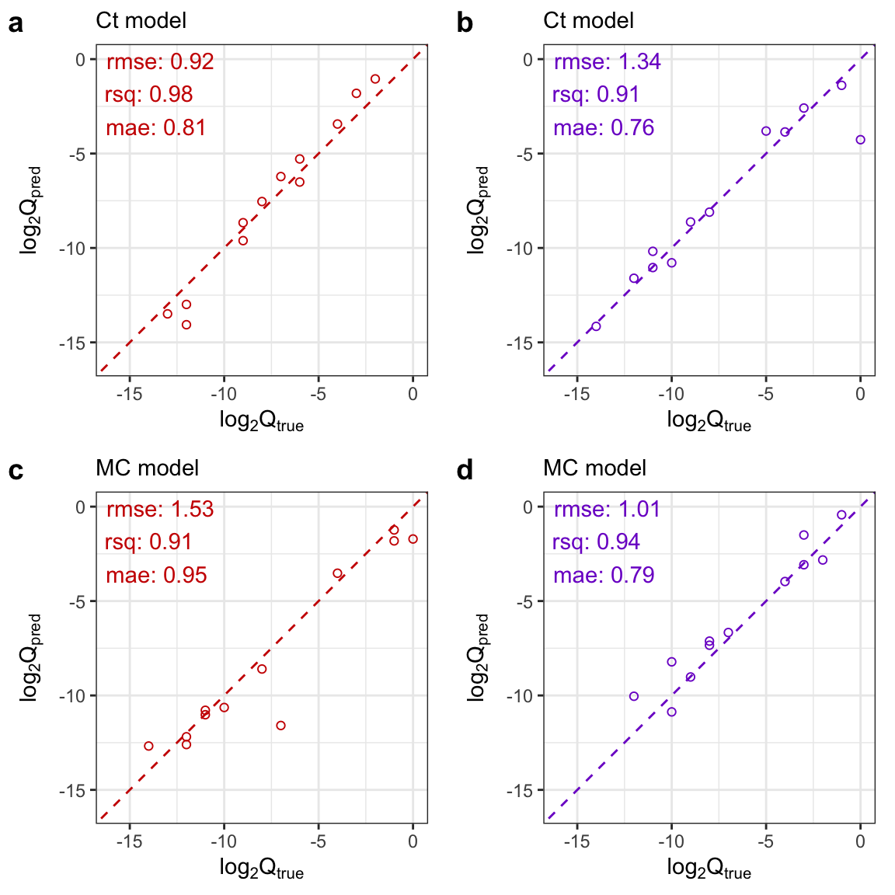
1.9 Combined Results
plot_grid(plotlist = c(p_amp, p_mc, p_model_ct, p_model_mc),
align = 'hv',
ncol = 4, nrow = 2, labels = 'auto')
ggsave("figures/figure1.jpg")Saving 9.5 x 5.87 in image
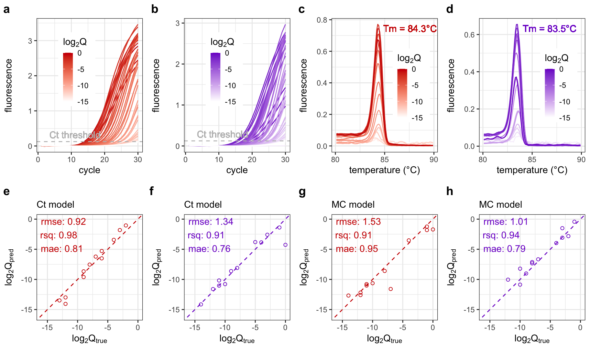